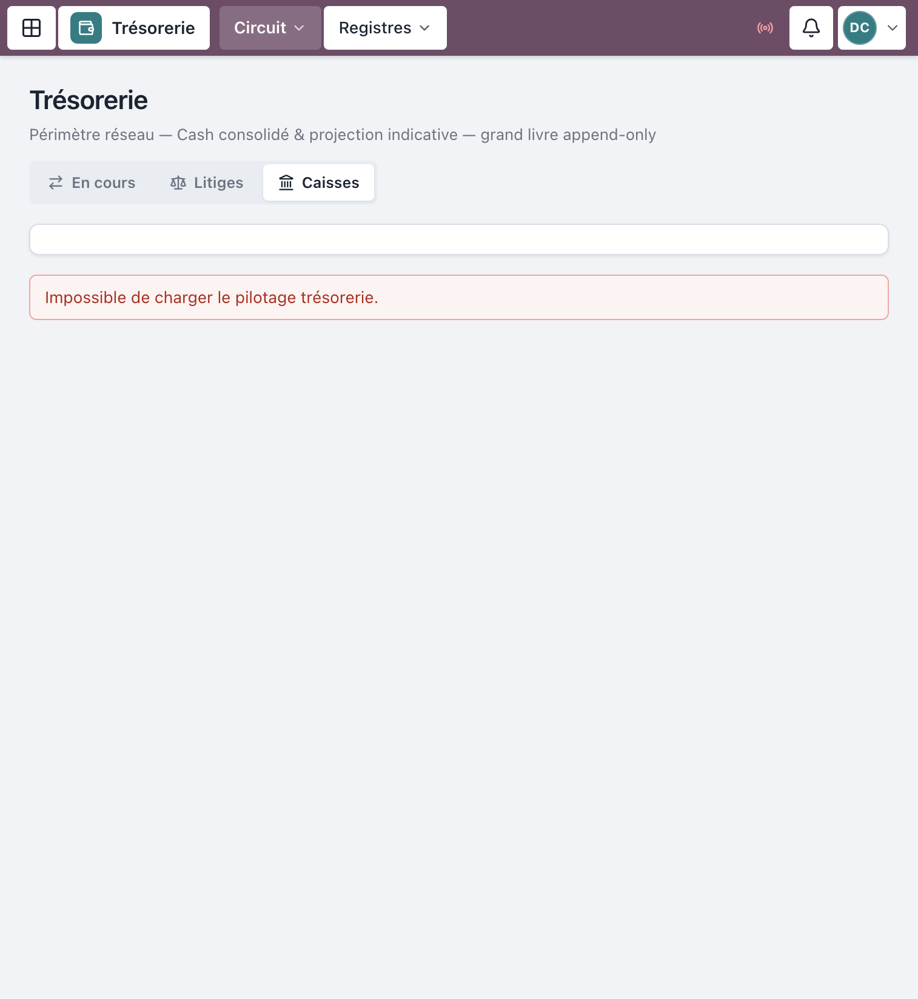
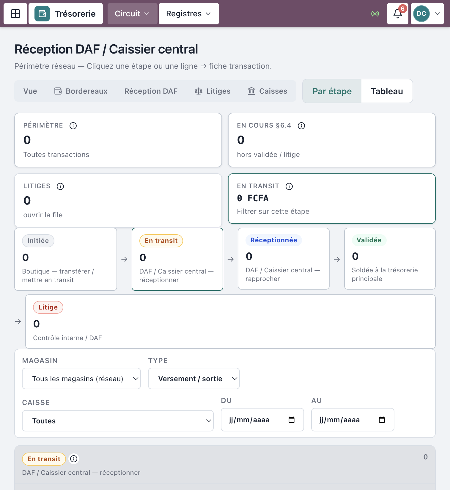
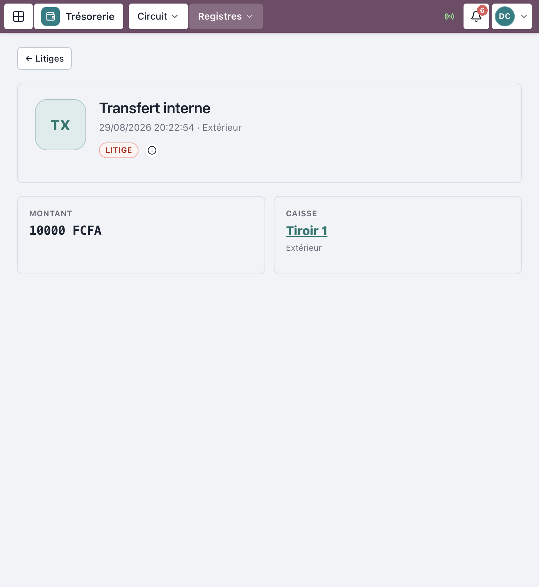
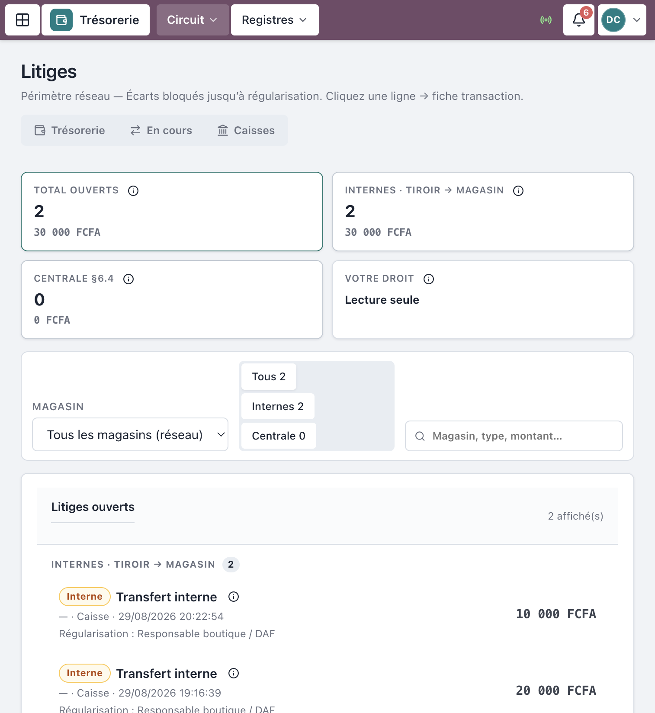

Progiciel Caisses & CRM — MAJOR AUTO PARTS
Public : Caissier central / Trésorier et
DAF (réception / validation)
Périmètre : réceptionner les versements magasin → centrale, rapprocher,
traiter les litiges (§6.4)
Captures réelles depuis l’application en production (
crm.majorautoparts.shop, comptes démo centrale / DAF). Les libellés correspondent exactement à l’interface.
| Rôle | Accès principal | Peut faire |
|---|---|---|
| Caissier central | Trésorerie / Réception DAF | Réceptionner et Rapprocher les
SORTIE_FONDS |
| DAF | Finance + Trésorerie | Idem + pilotage / validation niveau 2 |
| Contrôleur interne | Litiges / Audit | Régulariser un litige (pas réceptionner en routine) |
Avant votre intervention, la boutique a déjà :
Sans En transit, vous n’avez rien à réceptionner.
La boutique initie et met en
transit.
Seul le Caissier central ou le DAF
réceptionne et valide
(rapproche).
Ce n’est pas un simple masquage d’écran : l’API refuse (403) toute
tentative hors rôle.
https://crm.majorautoparts.shop (ou l’URL de
votre environnement).
Figure 1 — Connexion
Menu Trésorerie → Vue d’ensemble
(/tresorerie).
Vous y voyez notamment :

Figure 2 — Vue d’ensemble trésorerie
Navigation utile sur les listes circuit :
Vue · Bordereaux · Réception DAF · Litiges · Caisses
/tresorerie/reception).
Figure 3 — File des versements en transit
Sur la fiche (/transactions/:id) :
Bannière typique : « À réceptionner par le DAF ou le Caissier central — {montant} FCFA. »

Figure 4 — Fiche transaction : réception
Options utiles : Imprimer le bordereau.
Une fois Réceptionnée :
| Situation | Résultat |
|---|---|
| Montant reçu = déclaré | Statut Validée |
| Montant reçu ≠ déclaré | Statut Litige |
Il n’y a pas de bouton « Litige » séparé : l’écart au rapprochement ouvre le litige.

Figure 5 — Modale de rapprochement
Stepper du circuit sur la fiche :
Transfert initié → En transit → Réception DAF → Validée
Menu Trésorerie → Litiges
(/litiges).
Filtres utiles : Tous / Internes (tiroir → magasin) / Centrale (§6.4).

Figure 6 — Liste des litiges
Initiée → En transit → Réceptionnée → Validée
↘ Litige (bloqué jusqu’à régularisation)| Statut | Qui agit |
|---|---|
| Initiée | Boutique |
| En transit | Responsable boutique / Convoyeur |
| Réceptionnée | Caissier central / DAF |
| Validée | Caissier central / DAF (rapprochement OK) |
| Litige | Arbitrage Contrôle interne / DAF |
| Action | Centrale / DAF | Boutique |
|---|---|---|
| Encaisser une vente POS | Non (lecture éventuelle) | Oui |
| Initier un versement | Non | Oui |
| Mettre en transit | Non | Resp. / Convoyeur |
| Réceptionner | Oui | Non |
| Rapprocher / Valider | Oui | Non |
| Régulariser litige §6.4 | DAF / Contrôle | Non |
| Symptôme | Que faire |
|---|---|
| File Réception DAF vide | Vérifier que la boutique a bien mis En transit |
| Bouton Réceptionner absent | Mauvais rôle, ou statut ≠ En transit |
| Litige inattendu | Revoir le Montant reçu saisi au rapprochement |
| 403 à l’action | Compte hors CAISSIER_CENTRAL / DAF —
contacter le SI |
| Retard > 24 h | Traiter depuis les alertes trésorerie / pipeline |
Mot de passe seed : MotDePasse!123 (pas en
production live)
| Identifiant | Rôle | Usage |
|---|---|---|
demo-central |
Caissier central | Réception / rapprochement |
demo-daf |
DAF | Idem + finance |
demo-controle |
Contrôleur interne | Litiges / audit (pas réception routine) |
Document couvrant la machine à états §6.4 côté centrale et la
séparation des tâches §6.2.
MAJOR AUTO PARTS · CaissePOS